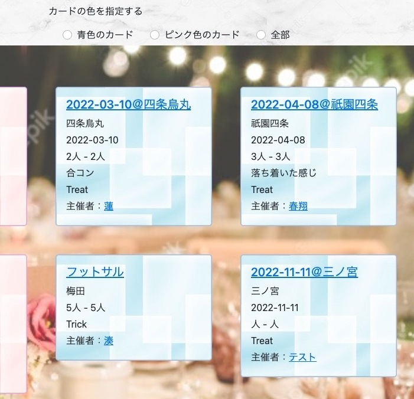
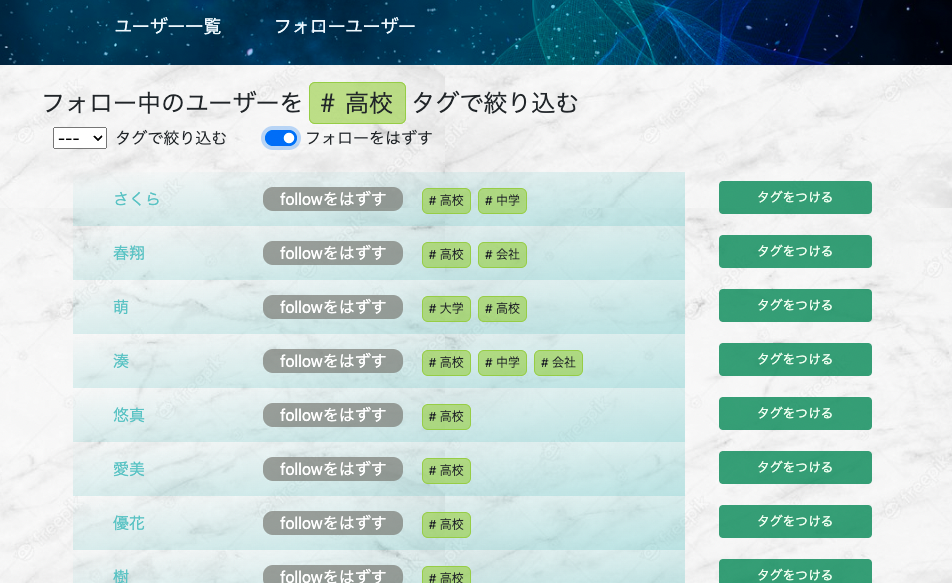

TRICK or TREAT（マッチングアプリ）
開発環境
Ruby / Ruby on Rails / MySQL / GitHub / Heroku / Visual Studio Code
-
概要
制作時間 120時間 URL https://trick-or-treat-37251.herokuapp.com/ ID admin PASS 2222 -
動作テスト
テスト用アカウント
mail test@com PASS 123123
OUTLINEアプリケーションの概要
オリジナルアプリケーションとして、飲み会やイベントのマッチングアプリを開発しました。
主な機能は、ユーザー登録機能、ユーザーフォロー機能、イベントルーム作成機能、いいね機能、マッチング機能です。
トップページにアクセスすると、開催中のイベントの一覧が表示されます。それをクリックすると、イベントルームの詳細を閲覧することができて、いいねを送ることができます。主催者とマッチングすると、そのルームでメッセージを交換することができるようになります。
-
開発に至った経緯
私自身、同年代の友人が家庭を持つなどして飲みに行く機会が少なくなりました。また、若い時に比べて一緒に飲みに行く相手を探すことがさらに難しくなったという課題に直面しています。
そこで、同じコミュニティ内にいなかったり、可視化されていないだけで、同じように「一緒に飲みに行く相手を探している」という思いを持った人も少なからずいるはずだという仮説を立てました。
それを解決するために、イベントや飲み会を開催したい人と参加したい人とをマッチングさせるアプリケーションを開発することにしました。
-
開発で工夫したこと
トップページにおける、イベントの検索機能でransackによる検索と、JavaScriptによる青色のカードとピンク色のカードの表示の切り替えを分けたことです。これにより、カードの色による切り替えをスピーディーに行うことができます。
-
今後実装したいと思っていること
ユーザーをフォローしたり、フォローを外したりする時に、非同期通信により画面の遷移を伴わずに実行できるようにしたいです。
この機能は、ユーザー一覧画面・ユーザー詳細画面・フォローユーザー一覧画面で行うことができますが、実行するとユーザー一覧画面に遷移してしまいす。
これにより操作が煩わしくなったり、まとめて一気にフォローしたい時にリズム良く操作できなかったりします。
まずは、ユーザーの利便性の向上をしたいです。